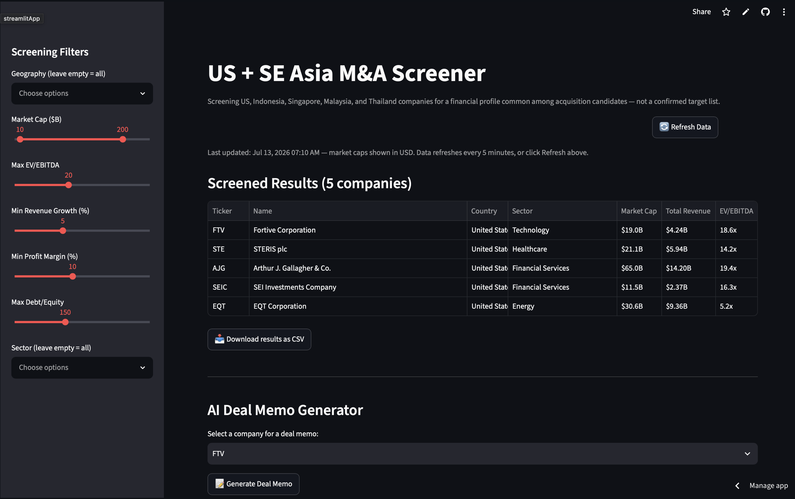
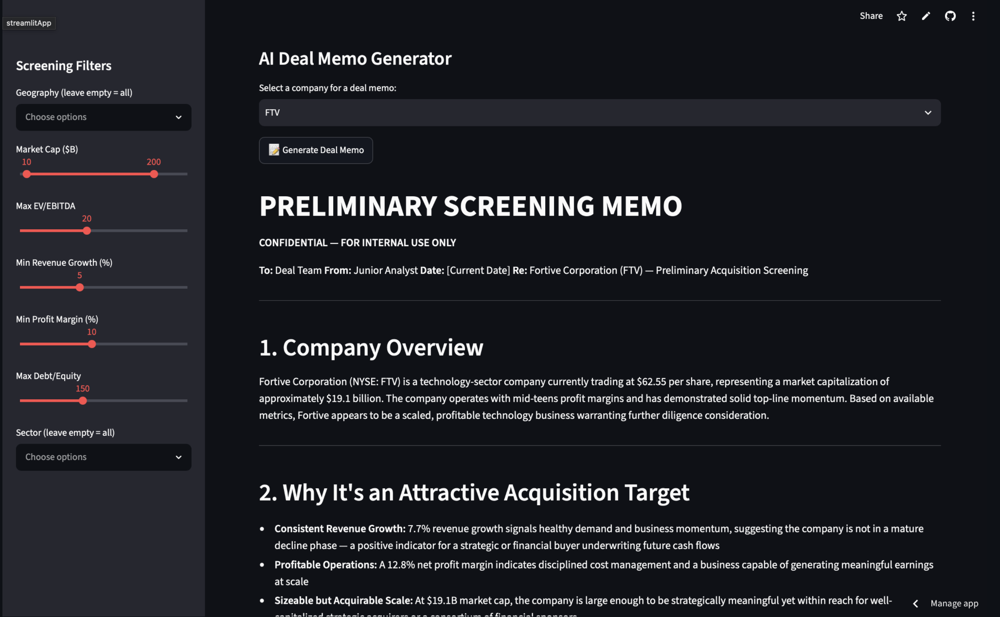

US + SE Asia M&A screener
A cross-border M&A screening tool covering a universe of 37 companies across five markets (the US, Indonesia, Singapore, Malaysia, and Thailand), with USD normalization and an AI-generated deal memo. It also includes an AI agent that works from the other side of a deal: given a target, it builds a ranked, sourced map of public companies that could buy it.
The tool·How the agent stays honest·AKRA validation·Limitations
- Universe37 companies
- Markets5
- Screening factorsEV/EBITDA, growth, margin, leverage, market cap; P/B and ROE for banks
- Currency handlingUSD normalization
- Buyer universe15 public US companies
- Agent sourcesSEC 10-K and 10-Q filings, Yahoo Finance
Why I built this
Most screening tools stop at the US or treat Southeast Asia as an afterthought. I wanted something that covers both on equal footing: screening for companies with a financial profile common among acquisition candidates, with currency-adjusted comparisons so a $2B Indonesian company and a $2B US company are compared in the same terms.
The tool started as a Google Colab prototype and was rebuilt into a modular Streamlit app. The agent came from a limit I found while pointing it at crypto and fintech deals: the screener's universe and target filters excluded plausible buyers. Rather than put AI on top of the wrong inputs, I built a separate buyer universe and an agent to research it.
What it does
- Screens companies across five markets on market cap, EV/EBITDA, revenue growth, profit margin, and debt/equity at the same time.
- Screens banks and similar financials on price-to-book and ROE, because EV/EBITDA doesn't work when debt funds the business.
- Converts every market cap and revenue figure to USD, since Southeast Asian figures come back in local currency.
- Filters by geography and sector, with adjustable sliders for each screening factor.
- Generates a preliminary deal memo via the Claude API for any company in the filtered results.
- Exports screened results as a CSV.
- Takes a target description and a deal size assumption, then shortlists buyers from a curated universe.
- Researches each buyer in its latest 10-K and 10-Q, and pulls market data.
- Answers five yes/no questions on strategic fit, backing each "yes" with a quote from a filing.
- Calculates ability to pay and writes a ranked buyer memo with links to its sources.
The tool in action


How the agent stays honest
- Code fills in the numbers. Table figures come directly from the data, and the AI's text is checked so its figures trace back to what it retrieved.
- Quotes are checked word for word. Code compares each quote with the filing it cites and builds the source list itself. A "yes" without a verified quote counts as "no".
- Code calculates the fit score. The same answers always give the same score.
- Banks and brokers are handled differently. Their reported cash includes client funding (JPMorgan shows $1.88T), so deals are sized against market cap rather than cash.
Validation: the AKRA deep-dive
To check the tool wasn't a black box, I took one output, PT AKR Corporindo (AKRA.JK), an Indonesian energy distribution and logistics company, and built a full manual investment memo on top of it, sourced from the company's FY2025 annual report rather than relying on the AI draft alone.
AKRA surfaced with 19% YoY revenue growth, a 7.4x EV/EBITDA multiple, and a net cash position. The process also exposed a data-quality issue I caught and corrected: the data provider reported about 34x debt/equity against the actual ~1.3x from the annual report. The memo also flagged a practical deal constraint: AKR's ownership is concentrated with a controlling family stake, so any real transaction would need negotiated buy-in rather than an open-market approach.
That issue shaped the agent: it recalculates debt/equity from each buyer's balance sheet and flags mismatches with the provider's figure.
What live testing taught me
Live testing exposed failures that mocked tests didn't. In one run, the AI used BNY's old ticker from memory, found no data, and scored it 1 out of 5. The ticker is now locked in code, and a buyer with no filing text gets no score, so a data gap can't read as a bad fit.
Built with
Python, Pandas, Streamlit, yFinance, the Claude API, SEC EDGAR, Pydantic, and pytest. Developed with Claude Code as an AI coding assistant.
Limitations
- Yahoo Finance sometimes blocks the hosted app. When that happens, it shows saved data with its date until live data returns.
- Live agent runs are turned off on the public app to protect API credits, so it shows a sample memo from a real run. That memo uses an illustrative target and deal size.
- The agent covers public US buyers only. Private acquirers such as Ripple, Stripe, Kraken, and Fidelity can be among the most relevant, and adding them by hand is planned for the next version.
- A verified quote shows the words are in the filing, not that the reasoning is right. Events after the latest filing aren't captured.
- Banks are hard targets in practice: deals need regulatory approval, and foreign ownership rules may limit cross-border buyers.
- The list of financials screened on book value is set by hand, and their P/B and ROE come from Yahoo and haven't been checked against annual reports.
- AI-generated memos are first-pass drafts, not a substitute for real diligence or comparable transaction analysis.
- "Screened" means a company fits a common financial profile, not that it is a confirmed target or an interested buyer.